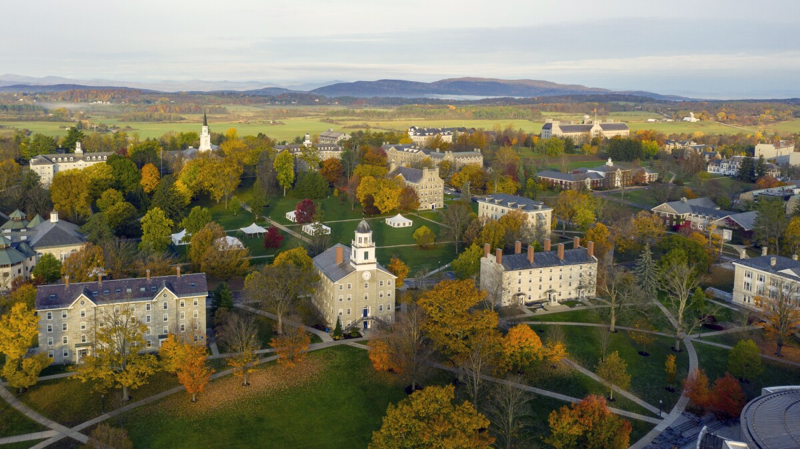
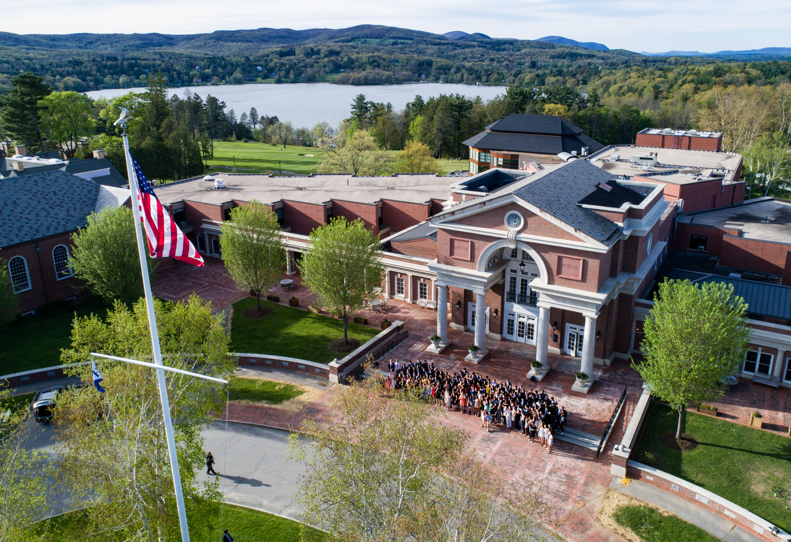

Education

About:
I am currenlty a sophomore at Middlebury College in Middlebury, Vermont, where I am pursuing a bachelor of arts with a major in Earth and Climate Sciences. I am expected to graduate in February of 2025. Similar to Hotchkiss, Middlebury is in a rural setting where I can thrive in an outdoor environment. When I am not racing for the Middlebury Cycling Team, I am either in the field with a geology lab or working on learning a new coding language.
GPA: 3.72/4.00; College Scholar (highest academic honor) 3 semestersActivities:
- Cycling Team President
- Grooming college nordic trails
- Working at college ski area
- Serving on the Addison County Bike Club Board
Courses:
Current (Spring 2023)
Winter 2023
Fall 2022
Spring 2022
Winter 2022
- Introduction to Architectual Design: HARC 0130
Fall 2021
Spring 2021

The Hotchkiss School
About:
I graduated from The Hotchkiss School, an independent boarding school located in Lakeville, Connecticut, in May of 2020. Here I discovered my passion for the outdoors and in a rural New England setting.
Athletics:- Varsity Mountain Bike Team: I competed on the mountain bike team for all four years and was the captain for my senior year.
- Varsity Hockey Team: I supported the team as a backup goalie for all four years.
- JV Golf Team: I played golf during the spring season and which was a great way to spend time outdoors.
- Environmental Science Prize Recipient
- Spearheaded a summer Agroecology class for the first year it was offered.
- Receieved high honors for academics.
The schools mission statement:
The aim of The Hotchkiss School, since its foundation, has been to provide a dynamic environment for teaching and learning, as well as exceptional preparation for future study and fulfilling adult lives. Our residential community—the network of relationships created by the School’s people, place, and opportunities—is our most effective means of providing a transformative educational experience, where students may grow and gain greater understanding of themselves and their responsibilities to others. We believe that a healthy and inclusive learning community nourishes students physically, emotionally, and intellectually; fosters joy in learning and living with others; and ensures that all feel safe, seen, and supported.
Learn more about the school by visiting the school website: The Hotchkiss School